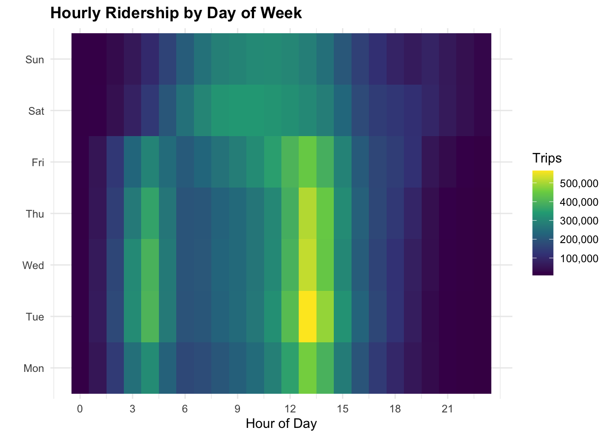
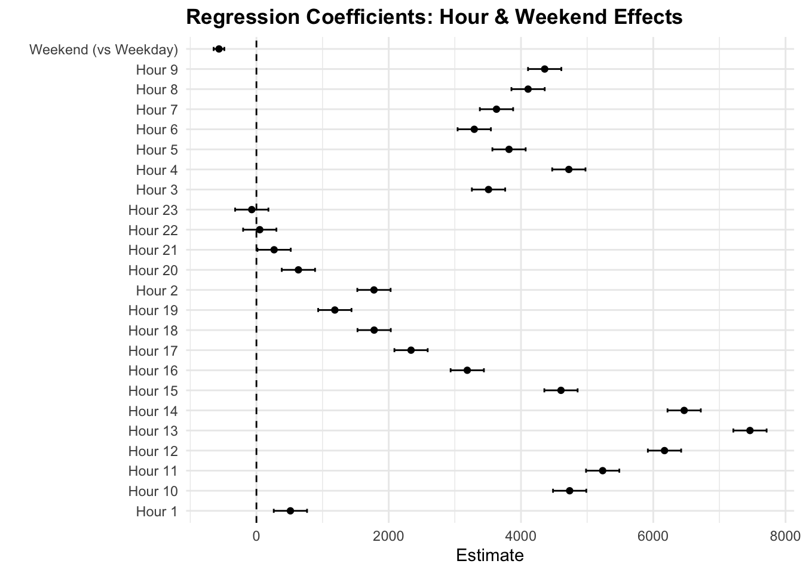

Among the multiple systems of transportation, bike-share systems have become a central component of urban networks. Offering flexible, low-emission travel options for commuters and recreational users in New York City, Citi Bike has emerged as the largest bike-share system in the U.S., Manhattan accounting a large share of total ridership due to the boruough’s density, employment concentration, and extensive station coverage.
Our study addresses the overarching question:
Among time, location, and other rider characteristics, which variables are the most important drivers of Citi Bike trip volume in Manhattan?
As an initial step toward addressing the broader question, this analysis examines a related sub-question:
“How do time of day and day of the week affect Citi Bike ridership?”
Temporal factors are widely recognized as strong predictors of transportation demand, especially in commuted-focused settings. By isolating Manhattan and analyzing hourly and weekly patterns, this study aims to measure the magnitude and consistency of time-based influences, highlighting their significance compared to other potential determinants.
2. Literary Review
Based on previous research on bike-share patterns and ridership, observations are consistent, including weekday commuting peaks and season variation. Multiple studies of Citi Bike data indicate that time-of-day and day-of-week explain a larger share of ridership variation compared to other individual rider characteristics.
Analyses using Citi Bike data similarly highlight such importance of temporal effects. The NYC Data Science project Inferential Analysis on Citi Bike Ridership applies statistical modeling techniques to identify key determinants of usage to explain a substantial portion of ridership variation. Although this work provides valuable system-wide insights, its overall approach may obscure meaningful spatial differences within NYC, particularly between boroughs with distinct travel behaviors and infrastructure characteristics.
The ScienceDirect study reinforces the conclusion about temporal variables. Their inferential analysis shows that the same variables emerge as significant predictors, even when controlling other factors. Once again, this highlights the importance of temporal regularity in bike share usage.
3. Data and Methods
3.1 Data Sources
Citi Bike Trip Data
This study uses monthly trip-level data from October 2024 through October 2025. The dataset provides detailed records including the trip’s start time, station information, geographic coordinates, and rider classification (member or casual). It offers high temporal resolution and comprehensive coverage of bikeshare activity across New York City, making them well suited for analyzing short-term incurring temporal patterns in ridership.
The analysis of the specific question focuses specifically on trip start times, as this best reflects rider decision-making and demand for bike-share services. Using such trip-level data allows for more flexible aggregation across varying temporal scales while preserving the underlying structure of usage patterns.
3.2 Data Processing
Code
library(ggplot2)library(scales)library(lubridate)library(ggtext)library(broom)citibike <-readRDS("data/processed/citibike_manhattan_all_202410_202510.rds")# REMOVE September 2024 completelycitibike <- citibike[format(date, "%Y-%m") !="2024-09"]# Re-create time variables AFTER filteringcitibike[, month :=format(date, "%Y-%m")]citibike[, dow :=wday(date, label =TRUE, week_start =1)]citibike[, wknd :=ifelse(dow %in%c("Sat", "Sun"), "Weekend", "Weekday")]
Several processing steps were applied to prepare the Citi Bike data for analysis. First, trips were filtered to only include rides starting in Manhattan. By using spatial containment with borough boundary shape-files, it ensured that only trips with starting coordinated falling within the Manhattan borough polygon were retained. This is a crucial step to focus on Manhattan and remove any trips originating in other boroughs.
To further restrict the defined study period, September 2024 had to be manually removed. Although the study period starts on October 2024, September 2024 appeared as a spillover record due late-night and delayed trips included in October 2024 Citi Bike release. Since the month was incomplete, it was excluded in order to maintain temporal consistency.
From the cleaned data, multiple temporal variables were created:
Hour of Day (hour)
Month (month)
Day of week (dow)
Weekend indicator (wknd)
Centered hour (hour_c)
Hour fixed effects (factor(hour))
Aggregating trips to hourly and daily counts, reducing noise inherent individual trip records, and enabling clearer visualization and interpretable temporal modeling. These steps were necessary and appropriate for identifying systematic patterns in bike-share usage, while also retaining sufficient temporal detail for meaningful analysis.
3.3 Analytic Approach
Exploratory Data Analysis (EDA)
Figure 1. Weekdays vs. Weekend Patterns.
Hourly ridership was compared between weekdays and weekends to distinguish commute-oriented usage from leisure-oriented travel, revealing weekday peaks and flatter weekend trends.

Figure 2. Hour x Day-of-Week Heat Map.
This heat map was used to visualize hourly and weekly ridership intensity for Manhattan. Weekends display strong daytime and commute peaks, while weekends exhibit flatter, more evenly distributed ridership patterns consistent with non-commuting travel.
Summary of Hourly Citi Bike Ridership by Day Type (Manhattan)
Day Type
Average Hourly Trips
% Difference vs Weekday
Peak-Hour Avg Trips
Share of Trips During Peak Hours (%)
Weekday
3565
0.0
3437
24.1
Weekend
3001
-15.8
3886
32.4
Regression Modeling

Figure 3. Regression Coefficients for Hour-of-day and Weekend Effects.
Coefficient estimated from a linear regression of hourly Citi Bike trip counts in Manhattan, using hour-of-day fixed effects and a weekend indicator.
Regression Results: Weekend Effect on Hourly Citi Bike Ridership
Term
Estimate
95% CI
p-value
R-squared
Observations
Weekend (vs Weekday)
-565.8
-646.5, -485.1
0
0.594
9501
4. Results
4.1 Time-of-Day Patterns
4.2 Day-of-Week Patterns
4.3 Regression Findings
5. Discussion
6. Limitations
The focus of this study is Manhattan exclusively without generalizing the findings to other boroughs with different land-use patterns. Additionally, the purpose of each individual trip cannot be derived from the Citi Bike data, requiring us to infer commuting and leisure behavior. While aggregating trips to hourly and daily counts is necessary for visualization and modeling, it can obscure other detailed temporal dynamics that are present in individual trip records. Relying on a single year of data ultimately limits the ability to assess long-term trends or any structural changes in Citi Bike usage over time. While the research and analysis are appropriate for this study, our potential future work could examine such factors.
7. Conclusion
Across cities, bike-share usage typically follows a stable temporal structure. Weekday ridership is driven by routine commuting patterns, while weekend usage reflects leisure patterns with lower, more discretionary demand. These results demonstrate that time-based variables are essential for understanding and modeling ridership variation.